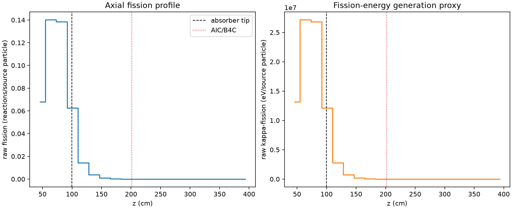
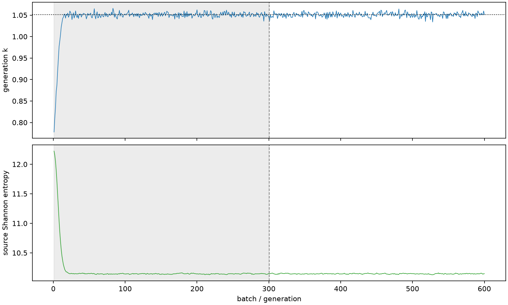

| field | value |
|---|---|
| experiment | V2-STAGE_256_OGRENCI_04-0001 |
| k | 1.0508497336158227 |
| MC standard error | 0.00019118964462738725 |
| seconds | 5914.728212102999 |
| acceptance | not_assessed |
| convergence | review_required |
Completed is output integrity only; physical and statistical review required. Zero tallies do not prove zero production or zero uncertainty.
| diagnostic | value |
|---|---|
| geometric fuel voxels | 5280 |
| zero fission tally voxels | 1979 |
| low signal fuel voxels | 2921 |
| low signal fission share | 6.638863249668144e-05 |
| low signal kappa share | 6.64237364971022e-05 |
| important fission share | 0.9502061333544267 |
| previous filter included | 2359 |
| duration estimate s | 1562.5173488400023 |
| actual minus estimate s | 4352.210863262997 |
| fission relative MC error | statistics |
|---|---|
| all_geometric_fuel | {"voxels": 5280, "positive_mean_voxels": 3301, "zero_mean_voxels": 1979, "undefined_relative_error_voxels": 1979, "median": 0.045511880205405426, "p95": 0.9329228767853114, "maximum": 1.0000000000000002} |
| low_signal | {"voxels": 2921, "positive_mean_voxels": 942, "zero_mean_voxels": 1979, "undefined_relative_error_voxels": 1979, "median": 0.5741941993550563, "p95": 1.0, "maximum": 1.0000000000000002} |
| important_95pct | {"voxels": 1048, "positive_mean_voxels": 1048, "zero_mean_voxels": 0, "undefined_relative_error_voxels": 0, "median": 0.005319773879228558, "p95": 0.006797100900010782, "maximum": 0.007609296716295918} |
| outside_previous_filter | {"voxels": 2921, "positive_mean_voxels": 942, "zero_mean_voxels": 1979, "undefined_relative_error_voxels": 1979, "median": 0.5741941993550563, "p95": 1.0, "maximum": 1.0000000000000002} |
| kappa_fission relative MC error | statistics |
|---|---|
| all_geometric_fuel | {"voxels": 5280, "positive_mean_voxels": 3301, "zero_mean_voxels": 1979, "undefined_relative_error_voxels": 1979, "median": 0.045449617480213714, "p95": 0.9325744852012794, "maximum": 1.0000000000000002} |
| low_signal | {"voxels": 2921, "positive_mean_voxels": 942, "zero_mean_voxels": 1979, "undefined_relative_error_voxels": 1979, "median": 0.5750037111557622, "p95": 1.0, "maximum": 1.0000000000000002} |
| important_95pct | {"voxels": 1048, "positive_mean_voxels": 1048, "zero_mean_voxels": 0, "undefined_relative_error_voxels": 0, "median": 0.00531299377171722, "p95": 0.006787752096540366, "maximum": 0.007598989535215173} |
| outside_previous_filter | {"voxels": 2921, "positive_mean_voxels": 942, "zero_mean_voxels": 1979, "undefined_relative_error_voxels": 1979, "median": 0.5750037111557622, "p95": 1.0, "maximum": 1.0000000000000002} |
| axial bin | fission share | kappa-fission share |
|---|---|---|
| 1 | 0.1585990086751223 | 0.15859995772343743 |
| 2 | 0.32697260429732744 | 0.3269584602624196 |
| 3 | 0.32294183685936745 | 0.32292758079621364 |
| 4 | 0.14592896310602035 | 0.14594113066994716 |
| 5 | 0.03324573393037481 | 0.03325674772466212 |
| 6 | 0.008922662128280063 | 0.008925731781837061 |
| 7 | 0.002455489109596336 | 0.0024563369730586236 |
| 8 | 0.000693989119261893 | 0.000694232150875879 |
| 9 | 0.00018499388426064504 | 0.00018507191303308702 |
| 10 | 4.16667500254302e-05 | 4.168985195188953e-05 |
| 11 | 1.0167497862652366e-05 | 1.0173826017443634e-05 |
| 12 | 2.4510676400627233e-06 | 2.4524982534161504e-06 |
| 13 | 4.100611817860665e-07 | 4.1034707121200333e-07 |
| 14 | 2.351367873870198e-08 | 2.348122140099953e-08 |
| 15 | 0.0 | 0.0 |
| 16 | 0.0 | 0.0 |
| 17 | 0.0 | 0.0 |
| 18 | 0.0 | 0.0 |
| 19 | 0.0 | 0.0 |
| 20 | 0.0 | 0.0 |
Histories include the inactive-to-active transition at batch 300. kappa-fission approximates fission energy production, not total heat deposition.

